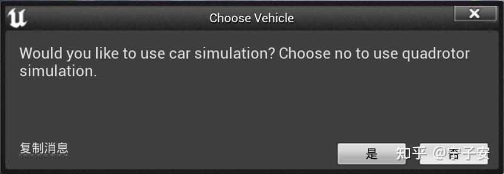

添加 AirSim 插件#
和 HUTB 一样，使用同一套 引擎 ，构建方法请参考 从源代码构建链接 。
构建 AirSim#
- 安装 Visual Studio 2022。确保选择使用 C++ 和 Windows 10 SDK 10.0.19041 进行桌面开发（默认选择），并在安装 VS 2022 时在“单个组件”选项卡下选择最新的 .NET Framework SDK。
- 启动
Developer Command Prompt for VS 2022. - 克隆仓库：
git clone https://github.com/OpenHUTB/AirSim.git，然后通过cd AirSim进入 AirSim 目录。
注意
通常不建议将 AirSim 安装在 C 盘。这会导致脚本运行失败，并且需要以管理员模式运行 VS。建议将其克隆到其他盘，例如 D 盘或 E 盘。
- 从命令行运行
build.cmd。这将在Unreal\Plugins文件夹中创建可立即使用的插件，可将其放入任何虚幻引擎项目中。
笔记
构建过程中会弹出Select Unreal Engine Version，选择 hutb 所对应的虚幻引擎，会为AirSim\Unreal\Environments\Blocks.uproject生成Blocks.sln文件。
添加插件#
下面的步骤是把 AirSim 作为一个插件安装到这个 HUTB 场景工程中。
首先到 AirSim 源码文件夹中找到 AirSim\Unreal\Plugins 文件夹（需要编译后才能获得，参考 在 Windows 上构建 AirSim ），并将AirSim文件夹复制到 hutb\Unreal\CarlaUE4\Plugins 文件夹中，如下图所示：
然后打开 hutb\Unreal\CarlaUE4\CarlaUE4.uproject 文件，修改其中的内容，如下图所示，添加 AirSim 的插件支持。（注意一定要用英文输入法，同时注意不要忘记逗号等分隔符，如果这里修改的有语法错误，则后面可能会出现错误。）修改完之后保存并关闭文件。
使用记事本打开 hutb\Unreal\CarlaUE4\Config\DefaultGame.ini 文件，在打包地图的后面添加 +MapsToCook=(FilePath="/AirSim/AirSimAssets")，以确保虚幻场景工程可以识别 AirSim 的资源，并将其包含进来，如下图所示。修改后保存并关闭文件。
右键点击 hutb\Unreal\CarlaUE4\CarlaUE4.uproject 文件，选择“显示更多选项”，然后选择 Generate Visual Studio project files 选项，如下图所示。这一步会自动检测所有的插件和源文件，并且生成 .sln 工程文件。
提示
如果右键菜单中没有这个选项，那么可以尝试重启电脑，如果仍然没有，可以尝试打开 CarlaUE4.uproject 文件，然后点击 文件 -> 刷新Visual Studio工程。
执行make launch启动虚幻编辑器。
在关卡编辑器中，将右侧 世界场景设置 中的 游戏模式重载 设置为 AirSimGameMode，如下图所示。点击 保存当前关卡 来保存设置好的环境，这样以后再次打开时就不用再次设置 游戏模式重载 了。
提示
如果关卡编辑器右侧没有 世界场景设置，则可以点击菜单栏中的 窗口，选中 世界场景设置。
点击工具栏中的 “运行”，就可以运行仿真了，在跳出的对话框中点 “否”，如下图所示。

点击“是”表示使用AirSim的车，但是 AirSimGameMode 运行时，因Town10HD_Opt 因为是分层地图，建筑没有加载，需要是地图 Town10HD，可以正常显示。
报错
如果点运行时提示：There were no compatible vehicles created for current SimMode! Check your settings.json.，在菜单中点击运行 -> 以独立进程运行则可以显示无人机，但是地图没有显示（从配置文件C:\Users\Administrator\Documents\AirSim\settings.json中加载，"SimMode": "ComputerVision"）。
如果是第一次仿真运行这个 Town10 场景，点击 运行 后，视口中一片空白的话（只显示无人机），不要紧张，可能需要一些时间来渲染画面，随着渲染的进行，画面会一点点展示出来。不同性能的计算机的渲染时间也不一样。如果渲染的较长时间的话，也不用担心，因为仅第一次打开的时候需要渲染，第一次渲染完成后，后面的仿真操作就可以直接加载了。渲染完成之后，视口中就会出现一个飞行的四旋翼，如下图所示。点击工具栏的 停止 按钮，即可退出仿真。
至此 AirSim 插件已经加载到虚幻引擎场景工程中了。
FAQ#
添加AirSim后（不启用），报找不到AirSim模块定义的错#
报错信息：
UnrealBuildTool: ERROR: Could not find definition for module 'AirSim', (referenced via Target -> CarlaUE4.Build.cs)
Unreal/CarlaUE4/Source/CarlaUE4/CarlaUE4.Build.cs中添加模块依赖：
PrivateDependencyModuleNames.AddRange(new string[] { "AirSim" });
添加插件后编译报找不到GBufferView.h的错#
无法打开包括文件: “SplineMeshSceneProxy.h”: No such file or directory
无法打开包括文件: “Renderer/Public/GBufferView.h”: No such file or directory